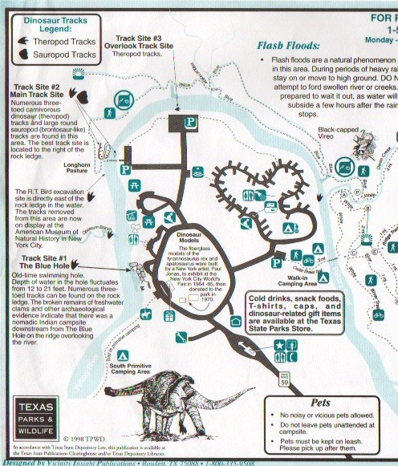
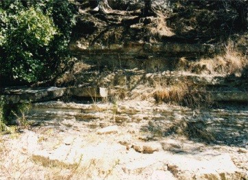
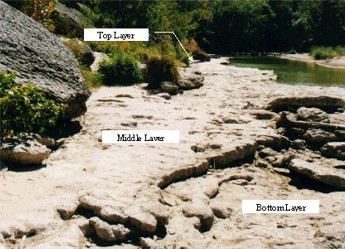
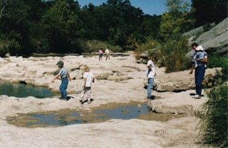
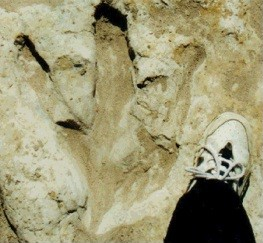
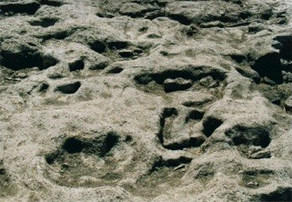
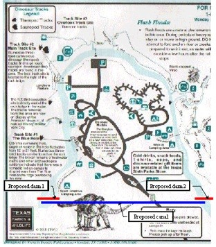

| Feature Article - June 2000 |
| by Do-While Jones |
In Dinosaur Valley State Park, near Glen Rose, Texas, there are some dinosaur tracks in the rocks of the Paluxy River bed. Some people claim those same rocks contain modern human footprints, proving that dinosaurs and men lived at the same time. On October 1, 1999, I had an opportunity to look at those rocks for myself.
I had some personal business to take care of in McAlester, OK. As it turned out, that business concluded a day earlier than anticipated. I had bought a discount (restricted) airline ticket from Dallas/Ft. Worth airport back to California, so it would have been an added expense to change the date of the return flight. That meant I had one free day to spend near the DFW airport. Since Glen Rose isn't too far from DWF, I decided to drive down there to look at the tracks myself.
The summer of 1999 was a very dry one in Texas. Although that was bad for the Texas ranchers, it was good for me because the Paluxy River was nearly dry when I got there. Tracks that are usually just barely visible under several inches of water, were completely exposed.
The Paluxy River makes a horseshoe bend inside the park. I only had time to explore the left leg of the horseshoe shown on the portion of the map below. I walked along the riverbed from Track Site #1 to Track Site #2 and back again. I drove to the parking area to look down on Track Site #3.

The river is in a channel that is probably 20 to 30 feet deep. (I failed to measure it. I wasn't planning to go there, and didn't know what I would see there, so I wasn't prepared to take exact measurements.) There is a lot of vegetation growing on the banks, but there are places where you can see layers of sedimentary rock that surround the river.
 |
|---|
In the bottom of the river channel there are three layers of limestone. In the picture below, you are looking downstream (south toward site #1). The slimy green puddle of water near the top of the picture is called the "Blue Hole" on the park map.
 |
|---|
Looking the other direction (toward site #2) we can see the top two layers more clearly. The man holding the baby is standing on the top layer. The other people are walking on the middle layer.
 |
|---|
The surface of the bottom layer is generally flat. I observed no clearly defined tracks of any kind in it. There are occasional small bumps and shallow depressions which might have been tracks that were almost completely eroded away. On the other hand, these surface irregularities might just be small, natural undulations.
The middle layer of limestone is between 6 and 12 inches thick. (I wasn't prepared to measure it.) It covers the bottom layer, and one could only see the bottom layer at those locations where the top layer has broken and been washed (or carried) away. The middle layer is full of unmistakable dinosaur tracks.
You can see my size 9½ shoe next to a dinosaur track, to give you an idea of how big they are.
 |
|---|
We believe the dinosaur tracks are genuine because there are too many of them to have been carved as a hoax. I followed them up and down the riverbed. This was easy to do because the riverbed was dry, and the tracks were generally parallel to the course of the river.
 |
|---|
It has been alleged that this middle layer also contains human footprints. Some say that the alleged footprints are merely dinosaur footprints that resemble human footprints. I did not find anything that looked like it could have been a human footprint. If I had, I would have photographed it. But all I found in this layer were lots and lots of dinosaur footprints heading upstream and downstream.
There are many possible reasons why I didn't find any human and dinosaur tracks together in this layer of rock. Perhaps there never were any human tracks in this layer. Perhaps there were some human tracks, but they are gone now (eroded or sold for souvenirs). Perhaps there were tracks there that I just overlooked. (I was only there for about 4 hours.) Regardless of the reason, I didn't see any.
I found lots of human footprints in the sand. I did not find any bird tracks in the sandbars. That's unfortunate because (as we told you last month), according to some paleontologists, birds are dinosaurs. I could have taken a picture of the bird tracks and human footprints together, and had photographic evidence of "dinosaur and man tracks together in the Paluxy River."
But, I didn't see any bird tracks in the sand. That doesn't prove there weren't any bird tracks. Nor does it prove that humans and birds did not coexist near Glen Rose, Texas in the summer of 1999. It simply means that I didn't see any. I just saw lots of human footprints, generally pointing upstream and downstream.
If I wanted to, I could establish an absolute age for some of the clearest prints by determining the brand of athletic shoe from the tread pattern, and checking with the manufacturer to determine when that shoe was first sold. Suppose I found a print from a shoe that was first sold three years ago. That would not mean that the footprint was made three years ago. It could have been made yesterday. But it would mean that the print could not possibly be more than three years old because those shoes did not exist three years ago.
Of course, anyone who has walked along the seashore knows what water does to footprints in the sand, and how quickly water can do it. So, we can be sure that the footprints are more recent than the last flow of water down the Paluxy River.
What else could we learn from a study of the human footprints in the Paluxy River? One could draw an imaginary line parallel to the bank of the river, and an imaginary line along the middle of each footprint from the heel to the toe. Then one could measure the angle between these two lines. Although I did not actually take these measurements, it was apparent that for the vast majority of human footprints, the angular difference between these two lines would be small. Since I actually saw some of these footprints being made, I know why that is. People were walking up and down the river, following the dinosaur tracks. Occasionally they turned to the left or right, but most of the time they walked parallel to the riverbank, so most of the footprints are approximately parallel with the riverbank. But let's suppose I wasn't there to see what happened. Could one figure it out from the footprints alone?
Whenever we observe lots of human footprints parallel to a riverbank, we can reach one of the three following conclusions. (1) It is a remarkable, unexplainable coincidence. (2) For some unknown reason, the river followed the footprints. (3) For some unknown reason, the footprints followed the river.
We think any reasonable scientist would come to the third conclusion. Clearly, the footprints follow the river. The motive for walking along the river might not always be apparent, but we would have no difficulty seeing from the footprints that one or more people were walking along the river.
If my observation is correct, then one must reach one of three conclusions. (1) It is a remarkable, unexplainable coincidence. (2) For some unknown reason, the river followed the dinosaur tracks. (3) For some unknown reason, the dinosaur tracks followed the river. We think any reasonable scientist would come to the third conclusion. But that conclusion poses a chronological challenge to conventional wisdom.
According to this story, 70 million years ago a layer of mud was laid down by water. That layer hardened into what I refer to as the bottom layer of limestone. Some time later, water laid down another layer of mud. While this mud was hardening, some dinosaurs walked on it and made some footprints. This mud then completely hardened, becoming the middle layer of limestone. Then, still millions of years ago, a third layer of mud turned into the top layer of limestone. More recently, during the Tertiary Period, twenty or thirty feet of broken rock and dirt covered all three layers. Then, the Paluxy River came along and eroded quickly through the soft Tertiary layers, exposing the top layer of limestone. Then, within the last 100 years, parts of the top layer of limestone eroded away, revealing the dinosaur tracks. Now the river is eroding away what little is left of the top layer, and some of the middle layer.
Since there is no way the river could know about the dinosaur tracks under twenty feet of dirt and rock, and almost a foot of limestone, and since the river would have no desire to follow the tracks even if the river knew that they were there, it must just be a coincidence that the river followed the tracks, if that's the way it happened.
The only differences between these first two explanations are how fast the layers were laid down, and how long ago that was. Neither explains why the tracks are aligned with the river.
There is a third explanation. The sedimentary rocks around Glen Rose were laid down under water. Later, the Paluxy River carved a channel in these rocks. Dinosaurs walked along the muddy riverbed as it was drying up one particularly hot summer (not unlike the summer of 1999). The mud hardened into what is now the middle layer of limestone, preserving the dinosaur tracks. Then, during the next rainy season, the river flowed more strongly, covering the tracks with mud. The mud hardened into the top layer. Then, within the last 100 years, parts of the top layer of limestone eroded away, revealing the dinosaur tracks. Now the river is eroding away what little is left of the top layer, and some of the middle layer.
Our theory is that the river was there before the dinosaurs, and the dinosaurs naturally followed the river for some reason or another. (Perhaps the best tasting plants live along the river. Maybe they were hunting prey that came to the river to drink. Who knows?) The tracks should follow the river.
If either of the first two explanations is correct, then there should be no correlation between the direction of footprints buried deep underground and the course of a river that was formed later. One would not expect to find footprints aligned with the river.
I observed that, on a small section of the Paluxy River, the dinosaur footprints appeared to be aligned with the river. I have never been to other sections of the river. I did not have an opportunity to confirm my observation. So, the first step in the scientific process is to confirm the tentative observation. This is most easily done in the summer, when the river is at its lowest. (This is why we are presenting this essay in the June newsletter.) This would make a great science fair project this summer for students living near Glen Rose.
When the water level is low, find as many dinosaur tracks as possible. Either use a magnetic compass to determine the direction of the footprints and the direction of the river, or use a protractor to measure the difference between the direction of the footprint and the direction of the river. Do this on as many different sections of the river as possible, inside and outside the park. Tabulate the results. Then, one can say with certainty that the tracks do (or do not) generally follow the riverbed.
If only a few tracks are perpendicular to the river, are they at a low point? That is, does it look like dinosaurs were crossing, or climbing in or out of the river at this point? This would be further evidence that would confirm or deny our theory.
Some might argue that our "prediction" isn't much of a prediction because we've already observed many tracks parallel to the river. We know what the outcome will be. (At least, we think we know.) So, let's go out on a limb by proposing an experiment we haven't already done. Unfortunately, our second experiment is expensive and requires cooperation by the great state of Texas. However, it kills two birds with one stone. Or, perhaps it would be better to say it saves two birds by removing some stones.
It is acknowledged on the signs at Dinosaur Valley State Park that the Paluxy River is eroding the tracks away, and that if something isn't done they will soon be gone. So, let's do something to save them. The state of Texas should divert the Paluxy River around the dinosaur tracks by digging a canal and making two dams at the bottom of the horseshoe as shown on the map below.
 |
|---|
This would not only preserve the tracks, it would make them visible all year and increase park revenues. That in itself is justification (in our minds) for doing it.
If either of the first two theories is correct, there should be many perfectly preserved dinosaur tracks right where we propose digging the canal. Bulldozers can rapidly remove all the overburden down to the top layer of limestone. Then, geologists can carefully excavate the dinosaur tracks that have been protected by the top limestone layer. These dinosaur tracks can be relocated to a museum. Then, the bulldozers can finish digging the ditch, and the water can be diverted around the traditional tracks. Two dams can keep the water from flowing along the old course of the river.
If the conventional theory is wrong, and our theory is correct, there won't be any dinosaur tracks there. So, now we've gone out on a limb. It is up to the state of Texas to saw it off. We hope that the people of Texas will recognize that their dinosaur tracks are a unique resource that must be preserved. They can preserve it by diverting the Paluxy River around it. Furthermore, they can expose more of those tracks (if they are there) in the process.
If there aren't any tracks there, then evolutionists have some difficult explaining to do. Why would a river twist and turn to follow dinosaur tracks?
We made a follow-up visit in 2003.
Click here for reaction to this essay.
| Quick links to | |
|---|---|
| Science Against Evolution Home Page |
Back issues of Disclosure (our newsletter) |
| Web Site of the Month |
Topical Index |